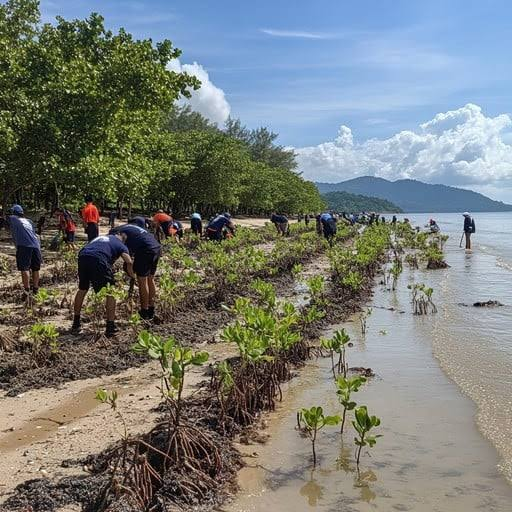
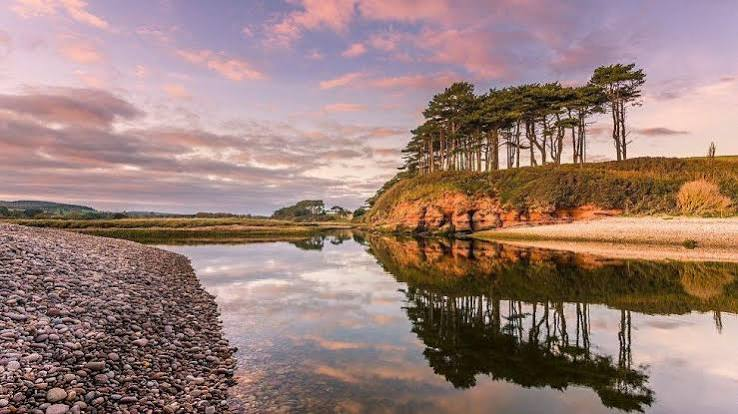
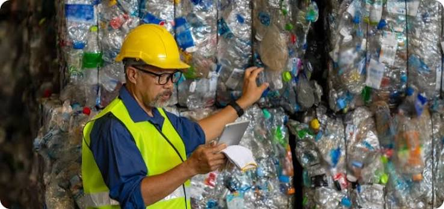
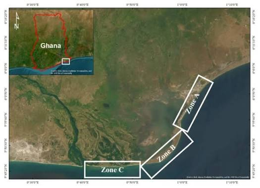
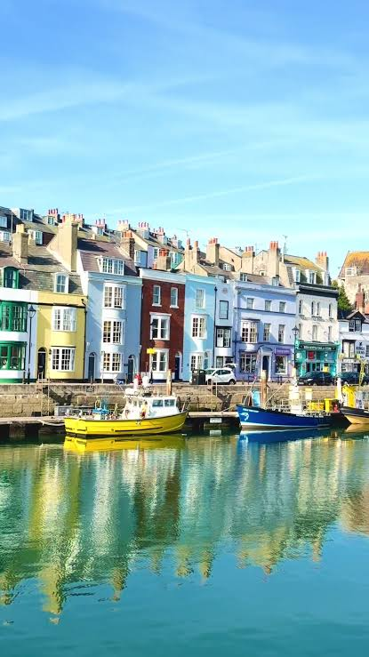

In The Field
Moments from the shoreline.
A look at clean-ups, plantings, classroom sessions and the community that makes them happen.









Have a moment worth sharing?
Volunteers are welcome to submit photos from community days for future galleries.